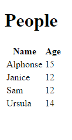
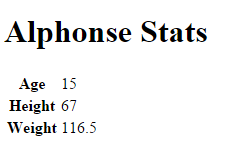
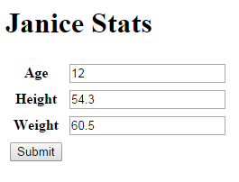

This how-to article describes how you can use Bottle, Apache, and MongoDB to create a simple, understandable, and fast website. In real life applications that support CRUD operations, it will most likely also use JavaScript, but BAMJ doesn't sound as cool. If you want to play with the code in this example, it is available on GitHub. The example is kept very simple to show the general workflow.
Here are the tools:
- Bottle Fast WSGI micro web-framework for Python
- Apache Web Server Popular, secure, open-source HTTP server
- MongoDB Leading open-source NOSQL database (BSON document based)
Note: Be warned if you want to use a NFS file system to house your web files, logs, or database. NFS is nice if you need to share directories with clients over a network. However, file locking is slow and that can cause problems if a program finds it cannot get a lock. It is not recommended to use NFS for logging or for MongoDB.
Overview
This is what we're going to do:
- Create a simple MongoDB database.
- Set up the Bottle web framework.
- Set up Apache and WSGI to enable Bottle applications.
- Create a Bottle application that can connect (using GET/POST) to the MongoDB database.
- Create HTML to view the data. With some final notes on how to handle CRUD operations on the data.
I'm assuming you have installed Bottle, the Apache HTTP server with mod_wsgi, and MongoDB.
Bottle This is the smallest and simplest Python web framework I have found. When I first started out, I used Django, which supports just about everything you could ever want in a framework. I found that it was great to get a lot accomplished in a short time; it is called the web framework for perfectionists with deadlines for a reason. But I always felt uneasy about using it because I never fully understood what was going on under the covers.
Bottle is on the other end of the spectrum. While I have to program the stuff I need, that gives me confidence because there's no magic. If it doesn't work, it's my code that broke it and I know where to look. On the other hand, my needs are simple. You might find this question on
stackoverflowhelpful if you're trying to decide on a web framework.Apache Over time Apache has lost some of its cool factor I guess, and Node/Express, Lighttpd, and Nginx, etc. are hot now. But Apache is a hardy, stable, and very popular tool. It is easy to install and not too hard to configure. You also need to follow the
modwsgiinstallation guide since that is the bridge between Apache and Bottle.MongoDB I really like the JSON-like structure of MongoDB documents (records). For my own needs (configuration database, build reports, and system monitoring) that structure fits much better than an SQL database.
Create the Database
First, create a toy people database in the mongo shell. We'll use a collection called test. Here is what it looks like from a terminal window:
> mongo servername
MongoDB shell version: 2.4.9
connecting to: servername/test
rs1:PRIMARY> var people = [
{name:'Alphonse', age: '15', height: '67', weight:'116.5'},
{name:'Janice', age: '12', height: '54.3', weight:'60.5'},
{name:'Sam', age: '12', height: '64.3', weight:'123.25'},
{name:'Ursula', age: '14', height: '62.8', weight:'104.0'}
]
rs1:PRIMARY> db.people.insert(people)
rs1:PRIMARY> db.people.find()
{ "_id" : ObjectId("..."), "name" : "Alphonse", "age" : "15", "height" : "67", "weight" : "116.5" }
{ "_id" : ObjectId("..."), "name" : "Janice", "age" : "12", "height" : "54.3", "weight" : "60.5" }
{ "_id" : ObjectId("..."), "name" : "Sam", "age" : "12", "height" : "64.3", "weight" : "123.25" }
{ "_id" : ObjectId("..."), "name" : "Ursula", "age" : "14", "height" : "62.8", "weight" : "104.0" }
The data is a set of height and weight measurements on children of various ages. That's the data we'll connect to via Bottle/Apache.
Bottle Directory Structure
In /var/www/bottle, the directory structure looks like this. This layout makes it easy to add new applications as you need them. We have the main wsgi script (bottle_adapter.wsgi), and a single application, people. For every application you write, you may also have a css file, a javascript file and templates in the views subdirectory.
bottle_adapter.wsgi
people.py
css/
person_form.css
js/
person.js
views/
people/
people.tpl
person.tpl
To add a new application:
- create the application code file in the root directory, like
people.py - mount the application in the
bottle_adapter.wsgifile - add the template path in the
bottle_adapter.wsgifile - add
css,jsfiles if needed - add a
viewsubdirectory to contain the application templates.
In this example we won't use any javascript or even css, but in real life you will probably want to add that in. This directory layout keeps things simple and separated, and it's easy to extend.
Apache Configuration
In the Apache httpd.conf file, set the WSGIScriptAlias and WSGIDaemonProcess.
For details on wsgi configuration, see the guide.
When a request comes in to our server with a url that begins with service, the request is passed on to our bottle application.
LoadModule wsgi_module /usr/lib/apache2/modules/mod_wsgi.so
WSGIScriptAlias /service /var/www/bottle/bottle_adapter.wsgi
WSGIDaemonProcess example02 processes=5 threads=25
You may need to set other parameters depending on your platform. I am on a FreeBSD machine and needed to set WSGIAcceptMutex posixsem in addition to the settings above. The wsgi guide is well written and indispensable.
The wsgi Adapter
When the Apache server gets a request that begins with service, the httpd daemon calls the bottle application adapter script, bottle_adapter.wsgi. As you can see below, the script imports the application code, adds to the template path and "mounts" the application on a specific URL path.
Now that the people application is mounted on the URL path /people, the application will get called for any URL that starts with /service/people.
The debug attribute is set to True until we're ready to go production. Bottle provides its own development server when you're getting started; I've commented out that line but it is helpful to use it when debugging your application code.
import sys, bottle
sys.path.insert(0,'/var/www/bottle')
import people
bottle.TEMPLATE_PATH.insert(0, '/var/www/bottle/views/people')
application = bottle.default_app()
application.mount('/people', people.app)
bottle.debug(True)
#bottle.run(host='example02', port=8090, debug=True)
The Skeleton of an App
Every application will have a similar skeleton; all my apps have the same things at the beginning. The following code block displays the beginning of the people application. First, we make the necessary imports, get a connection to the MongoDB database test collection and instantiate our application, app, which is known as people.app to the wsgi adapter.
from bottle import Bottle, view, request
from bson.objectid import ObjectId
import pymongo
conn = pymongo.MongoReplicaSetClient(
'example02.unx.sas.com, example01.unx.sas.com',
replicaSet='rs1')
db = conn.test
app = Bottle()
And there we have it--our people.app Bottle application, all wired up but not able to do anything yet. Let's add some abilities so we can respond to URL requests. For example, when a GET request comes in on service/people, we'll send back a response with a list of the people in the database.
Most capabilities you code will have three parts:
- a URL route that matches and responds to an HTPP request
- a view (template) to render as the response
- a function to get the data that the view expects.
In the following code block, the @app.get decorator corresponds to a URL route; it responds to a GET request with no further arguments ('/'); however, by the time the request makes it to this point, the URL is actually service/people; that is what the root URL looks like to the people app.
The @view decorator specifies the template to use to display the data in the response (that is, the template views/people/people.tpl )
The people function creates a cursor which gets all the records (documents in the MongoDB world) from the database, sorts those records on the name and returns them as a list under the key named results.
@app.get('/')
@view('people')
def people():
p = db.people.find().sort([('name', 1)])
return {'results': list(p)}
Note:
The sort function in pymongo operates differently from the mongo shell; it uses a list of tuples to sort on instead of a document. This tripped me up at first. The documentation explains it well.
Next, here is a route using the @app.get decorator which responds to a GET request of the form service/people/somename. It executes the person function and renders the resulting data using the person template (views/people/person.tpl).
The person function gets the single (or first) document with a matching name, converts the _id value to a string and returns the data under the key named person.
@app.get('/<name>')
@view('person')
def person(name):
person = db['people'].find_one({'name':name})
person['_id'] = str(person['_id'])
return {'person': person}
Why convert the _id from an ObjectID (as it exists in the MongDB database) to a string? If all you want to do is display the record, you could just delete the key, but if you want to interact with the record (possibly updating or deleting it through the client), you have to keep track of that _id. Otherwise there's no way to map back to the record in the database. So we transform it to a string on the way out to the client and as you'll see in the next route function, we transform it back to an ObjectID on the way back in to the database.
The last route in this example uses the app.post decorator to respond to a POST request. It creates a new dictionary populated with values from the request, converts the string _id value back to an ObjectID, and saves the record back to the database. It returns a bare string ("Thanks...") so the user knows the data was updated.
@app.post('/<name>')
def update_person(name):
person = {'name': name}
person['age'] = request.POST.get('age')
person['weight'] = request.POST.get('weight')
person['height'] = request.POST.get('height')
person['_id'] = ObjectId(request.POST.get('_id'))
db['people'].save(person)
return 'Thanks for your data.'
Keep in mind that this is just a simple toy example; if you have a bazillion records or a gazillion requests per second, you'll want to do a lot of reading on MongoDB index creation, aggregation and filtering techniques.
Summary: What We Have So Far
When a GET request comes in with this url:
http://example01/service/people
that url is routed from Apache to the Bottle wsgi script and on to the people.app Bottle application and finally to the /people route. That route, in turn, invokes the people function, which retrieves all the MongoDB documents in the people database. The JSON data is returned in the response under the key named results and rendered by the people template.
When a request comes in with this url:
http://example01/service/people/Sam
If the request is a GET, the document with name = Sam is retrieved, the _id is converted to a string instead of an object (it is saved as an ObjectId in the MongoDB database). The JSON data is returned in the response under the key named results and rendered by the person template.
If the request is a POST, the data is read from the request form, the _id is turned back into an ObjectId and the document is saved to the database.
Note: With this smidgen of code and a rational directory structure, before even talking about the HTML side, we have an simple, easy-to-understand API that can send and receive JSON documents, interacting with a MongoDB backend database.
A Sample Template File
You can use plain HTML to display and update records if your underlying data has a simple structure, as our example data does.
This is the view-only template people.tpl which displays the data on a GET request to http://example02/service/people:
<!doctype html>
<html>
<head>
<title>People</title>
</head>
<body>
<h1>People</h1>
<table>
<tr><th>Name</th><th>Age</th></tr>
%for person in results:
<tr>
<td>{{person['name']}}</td>
<td>{{person['age']}}</td>
</tr>
%end for
</table>
</body>
</html>
And this is the (unstyled) result:

To view a particular person, the logic is similar, except we get back a single record: Here is the template person.tpl:
<!doctype html>
<html>
<head>
<title>{{person['name']}} Stats</title>
</head>
<body>
<h1>{{person['name']}} Stats</h1>
<table>
<tr><th>Age</th><td>{{person['age']}}</td></tr>
<tr><th>Height</th><td>{{person['height']}}</td></tr>
<tr><th>Weight</th><td>{{person['weight']}}</td></tr>
</table>
</body>
</html>
If the url is http://example01/service/people/Alphonse, here is the result:

CRUD Operations
Performing updates, deletes, or creating records can get tricky, depending on the complexity of your data. If you have nested JSON data, you will need some Javascript to serialize the user-input data so the result has the correct structure when it gets back to MongoDB. More on that later. For now let's write a form that enables us to update a simple record and save it.
Simple Case
First we need to view the data in a prepopulated form and then we need to update the database record with the changes made in the HTML client.
We already have the Python code (the person and update_person functions), so we just need to write the HTML page. You might call the page person_update.tpl, and change the @app.get(/<name>) route to use that instead of the view-only template person.tpl from before.
This page displays the data but now inside an HTML form. We keep the _id value because we must have it in order to update the database. If we don't include the _id on the way back in to the database, our changed data will be added to the database as a new record instead of updating the original record.
<!doctype html>
<html>
<head>
<title>{{person['name']}} Stats</title>
</head>
<body>
<h1>{{person['name']}} Stats</h1>
<form id="persondata" name="person" method="post" action="http://example02/service/people/{{person['name']}}">
<input type="text" name="_id" value="{{person['_id']}}" style="display: none;" />
<input type="text" name="name" value="{{person['name']}}" style="display: none;" />
<table>
<tr><th>Age</th>
<td><input type="text" name="age" value="{{person['age']}}" /></td>
</tr>
<tr><th>Height</th>
<td><input type="text" name="height" value="{{person['height']}}" /></td>
</tr>
<tr><th>Weight</th>
<td><input type="text" name="weight" value="{{person['weight']}}" /></td>
</tr>
<tr><button type="submit">Save</button></tr>
</table>
</form>
</body>
</html>
Complex Case
If you have nested JSON data you will probably have to use Javascript. There are so many solutions that I'll just point out some links. The library I use (and I have deeply nested JSON) is form2js. It is a Javascript library for collecting form data and converting it to a Javascript object.
In no particular order, here are some similar libraries that address the same situation:
- jquery-json jQuery plugin for conversion to and from JSON.
- forminator uses class names and data attributes to build ajax interfaces.
- domajax jQuery plugin, enables ajax calls without javascript.
- jquery.form.serializer jQuery extension to serialize HTML forms to JSON.
The following is an example of using the form2js library and jQuery. You can use the library with arbitrarily nested JSON documents. However, you need to make a couple of changes to your Bottle app. This example template and the changed app code are in the GitHub files alt_people.py and alt_person_update.tpl.
The main change to the people app is the update_person function, which now looks like the following. It reads the JSON string from the request body and converts it. The loads function is included in the pymongo package; it provides conversion from a string instance to a BSON document. Finally, our function converts the _id to an ObjectId and saves the record back to the database.
@app.post('/')
def update_person():
data = request.body.read()
person = loads(data)
person['_id'] = ObjectId(person['_id'])
db['people'].save(person)
In the template, the form itself is identical but the submit button now calls a Javascript function.
<!doctype html>
<head>
<title>{{person['name']}} Stats</title>
</head>
<body>
<h1>{{person['name']}} Stats</h1>
<form id="persondata" name="person">
<input type="text" name="_id" value="{{person['_id']}}" style="display: none;" />
<input type="text" name="name" value="{{person['name']}}" style="display: none;" />
<table>
<tr>
<th>Age</th>
<td><input type="text" name="age" value="{{person['age']}}" /></td>
</tr>
<tr>
<th>Height</th>
<td><input type="text" name="height" value="{{person['height']}}" /></td>
</tr>
<tr>
<th>Weight</th>
<td><input type="text" name="weight" value="{{person['weight']}}" /></td>
</tr>
<tr>
<td><input type="submit" /></td>
</tr>
</table>
</form>
When the user clicks the submit button, the save_data function is called.
First we load jQuery and the form2js library. Finally, we have two functions--one that executes when the submit button is clicked, and the save_data function.
The save_data function reads the JSON data from the form into the variable json_data, stringifies it to the variable jsonstr, and fires an AJAX POST back to our URL route for updating a person (the only route in our app that accepts a POST request).
<script type="text/javascript" src="/js/jquery.min.js"></script>
<script type="text/javascript" src="/js/form2js.js"></script>
<script type="text/javascript">
save_data = function(evt){
var json_data = form2js('persondata', skipEmpty=false);
var jsonstr = JSON.stringify(json_data, null, '\t');
$.ajax({
type:"POST",
url: 'http://example02/service/people',
data: jsonstr,
success: function(){
alert('Configuration saved.')
}
});
};
(function($){
$(function(){
$('input[type=submit]').val('Submit').click(save_data);
});
})(jQuery);
</script>
</body>
</html>
When a request comes in at this URL:
http://example01/service/people/Janice
The result is displayed in a form:

Check it out on GitHub if you want to play around with it. It is very easy to add applications and get CRUD operations going on any mongoDB database.
Let me know if you have any questions or if something needs changing on the GitHub repo.